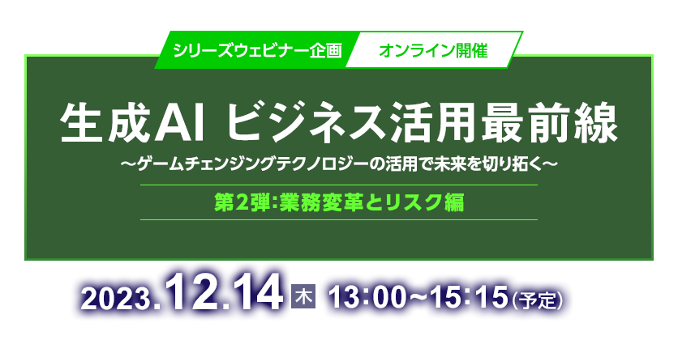

OpenAI社の“ChatGPT”が登場したことで注目を集める“生成AI”。文章や画像の自動生成技術は日々進化を続けており、近い将来、我々のビジネスに大きな変革をもたらすと多くのビジネスパーソンは認識しています。
そこで気になるのが、自社に導入した際のメリットの具体化とリスクです。
第2弾となる今回は、「業務変革とリスク」をテーマに生成AIのビジネス活用最前線について解説します。
開催当日に実施する
主催者アンケート回答者の中から抽選で100名様に
「Amazonギフト券（1,000円分）」進呈！
本セミナーはオンラインセミナー（ライブ配信）です。
開催概要
- 名称
- 生成AI ビジネス活用最前線
～ゲームチェンジングテクノロジーの活用で未来を切り拓く～
第2弾：業務変革とリスク編
- 日程
-
2023年
12月
14日（木）
13：00～15：15（予定）
- 開催形式
- オンラインセミナー
- 主催
- 日経BP 総合研究所
- 協力
- 日経クロステック、日経ビジネス電子版、日経コンピュータ、日経ビジネス
- 協賛
- ベイン･アンド･カンパニー･ジャパン･インコーポレイテッド、サテライトオフィス（ABC順）
- 参加料
- 無料（事前登録制）
- 対象者
- 経営層、DXリーダー、事業部門のマネジメント層、IT・情報システム部門 など
プログラム
※講演者や講演時間など、プログラムは変更になる場合がございます。予めご了承ください。
-
13：00 ~ 13：30
-
【主催者特別対談】
生成AIでオペレーション業務6割減目指すサイバーエージェント
活用法、リスキリング、リスクなど気になる話を独占インタビューサイバーエージェント
専務執行役員 技術担当長瀬 慶重 氏＜聞き手＞
日経BP 総合研究所
チーフコンサルタント
主席研究員杉山 俊幸生成AIを使った業務変革への関心が高まっている。独自のLLM（大規模言語モデル）を開発し、それを商用利用までできる形で無償公開し関心を集めたサイバーエージェント。この11月には、日本語の文章として約50,000文字を一度に処理することができるバージョン2を一般公開した。リスキリングも推進し、社内のオペレーション業務を、2026年には6割削減する計画も発表している。いかに業務変革を進めるのか。サイバーエージェントの責任者にお聞きする。
-
13：35 ~ 14：05
-
【ソリューション講演】
国内外の活用事例から見えてきた最新の生成AIトレンド
ベイン･アンド･カンパニー
パートナー安達 広明 氏本講演では、生成AIを各社がどのように活用しているかについて、具体的な事例をもとにお伝えし、さらにそこから見えてきた最新のトレンドや発見を深掘りします。海外の先進的な「ビジョナリー」企業の事例だけでなく、生成AI活用において抱える典型的な課題と克服の仕方を、製造業から金融業まで、日本企業4社の幅広い事例から紐解きます。
-
14：10 ~ 14：40
-
【ソリューション講演】
企業に求められるAI活用におけるセキュリティ対策
サテライトオフィス
クラウド事業部内藤 佐知子 氏ChatGPTを利用したAIチャットボットで、日常業務の生産性を向上させる活用方法をお話します。AIは便利で生産性を増加させる反面、「情報漏洩」や「ノウハウ流出」に対して万全なセキュリティ対策が必要です。本セミナーでは、安全且つ正確なAIチャットの活用方法を事例を交えてご紹介。明日からの生産性向上に向けて是非ご覧ください。
-
14：45 ~ 15：15
-
【主催者特別対談】
企業活用ガイドライン策定の第一人者が語る、生成AI活用に潜む真のリスク
日本ディープラーニング協会理事
STORIA法律事務所
代表パートナー弁護士柿沼 太一 氏《聞き手》
日経BP 総合研究所
チーフコンサルタント
主席研究員杉山 俊幸生成AIをめぐっては、リスクが気になり活用に二の足を踏む企業と、積極的な活用を試みる企業に大別される。
いずれにしろ、この「リスク」を正確に認識しないと、生成AI活用で他社に遅れをとることは疑いなさそうだ。
本セッションでは日本ディープラーニング協会の「生成AIの利用ガイドライン」作成に関与された同協会理事に、活用の勘所、真のリスクを聞いていく。
お申し込み
■Webセミナーご受講に際し、以下の事項に同意のうえお申込ください。
- 視聴に必要なURLは、登録完了メールでご確認ください。
また、MyPageからも確認ができます。
URLはセミナーに参加する方のみ利用可能とし、再配布を禁止します。 - 受講者は、動画を録画・キャプチャーすることは一切できません。
もし、発見した場合、事務局は削除を要求できることとします。また、SNSなどへのアップも禁止します。 - セミナーの内容や受講者の個人情報などはセミナー内のみとし、口外しないでください。
- システムトラブルなどにより、画像・音声に乱れが生じた場合も対応出来かねますのでご自身でご調整ください。
- 配信中、異常と思われる接続を発見した場合、予告なく切断することがあります。
■視聴環境事前ご確認および注意事項について
- » オンラインセミナー視聴マニュアル（PDF）はこちら
- Webセミナー【ライブ配信】ご参加にあたり、「視聴環境チェックサイト」での動作確認をお願いしております。音声および動画が正常に受信できるかを、下記「視聴環境チェックサイト」へアクセスしていただきご確認ください。なお、お客様がご使用のパソコンおよび通信環境によってはWebセミナー【ライブ配信】にご参加いただけない場合がございますので、あらかじめご了承ください。
- ▼視聴環境チェックサイト（PC・スマートフォン）
https://ondemand.seminar.vcube.com/checker/videostream - ※チェックサイトで視聴に問題がある場合は、まずセミナーの推奨環境に合っているかをご確認ください。
- ▼セミナー推奨環境(ビデオストリーミング配信の「受講者」の項目をご確認ください
https://jp.vcube.com/support/requirements/req_seminar.html - ※受講者側で推奨しているPCブラウザ・OSは、以下となります。
Windowsプラウザ・・・Microsoft Edge、Mozilla Firefox、Google Chrome
Macブラウザ・・・safari
WindowsOS：Windows 11、Windows 10、Windows 8.1
MacOS：macOS 最新版 - ※受講者側で推奨しているスマートフォン・タブレットのブラウザ・OSは、以下となります。
iOS ・・・iOS デバイス iOS 10以上、Safari
Android・・・ Android 6以上、Google Chrome - ※インターネット環境によっては視聴が出来ない場合がありますので、視聴確認サイトから、受講される環境にてテストをお願いします。
お問い合わせ
日経BP読者サービスセンターセミナー係
お問い合わせお申し込み受付を
終了しました